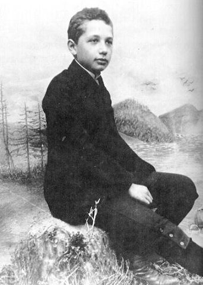
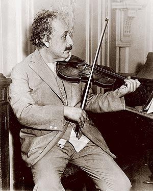

Albert Einstein
The Greatest Physisist who ever lived
Created by @JoshFerge
Early Life
- Born March 14th, 1879
- Moved around a lot in childhood
- Attended Polytechnic Institute
in Switzerland - Renounced Citizenship
in Germany
Scientific Accomplishments
Annus mirabilis (Year of Wonders)
Wrote four groundbreaking articles in the year of 1905
Photoelectric effect
"Energy, during the propagation of a ray of light, is not continuously distributed over steadily increasing spaces, but it consists of a finite number of energy quanta localised at points in space, moving without dividing and capable of being absorbed or generated only as entities."
Brownian motion
Bodies of a microscopically visible size suspended in liquids must, as a result of thermal molecular motions, perform motions of such magnitudes that they can be easily observed with a microscope. It is possible that the motions to be discussed here are identical with so-called Brownian molecular motion.
Special relativity
He applies the principle of relativity, which states that the laws of physics remain the same for any non-accelerating frame of reference (called an inertial reference frame), to the laws of electrodynamics and optics as well as mechanics. In the second postulate, Einstein proposes that the speed of light has the same value in all inertial frames of reference, independent of the state of motion of the emitting body./p>
Mass Energy Equivalence (E=mc^2)
He applies the principle of relativity, which states that the laws of physics remain the same for any non-accelerating frame of reference (called an inertial reference frame), to the laws of electrodynamics and optics as well as mechanics. In the second postulate, Einstein proposes that the speed of light has the same value in all inertial frames of reference, independent of the state of motion of the emitting body.
Einstein The Person

- Loved Music
- Jewish Heritage, not raised religious
- Zionist
Religious Views
- Not an Athiest
- Believed in Spinoza's God rather than Personal God
- Called Himself Agnostic
Political Views
- Socialist
- Helped form state of Isreal
- Member of many Civil Rights groups, including NAACP
Later Life
- Stayed in America
- Became more involved with Politics
- Died April 1955, worked right until the end
Quotes
He who joyfully marches to music in rank and file has already earned my contempt. He has been given a large brain by mistake, since for him the spinal cord would fully suffice.
If A is a success in life, then A equals X plus Y plus Z. Work is X; Y is play; and Z is keeping your mouth shut.
The most powerful force in the universe is compound interest.
Joy in looking and comprehending is nature's most beautiful gift.
The finest emotion of which we are capable is the mystic emotion. Herein lies the germ of all art and all true science. Anyone to whom this feeling is alien, who is no longer capable of wonderment and lives in a state of fear is a dead man. To know that what is impenatrable for us really exists and manifests itself as the highest wisdom and the most radiant beauty, whose gross forms alone are intelligible to our poor faculties - this knowledge, this feeling that is the core of the true religious sentiment. In this sense, and in this sense alone, I rank myself amoung profoundly religious men.